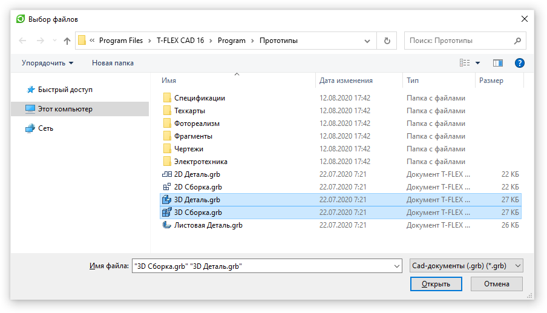

Выбор и сохранение файла |
СоздатьДиалогВыбораФайла([Заголовок]) - создает диалог выбора файла из проводника Windows
C#
ДиалогВыбораФайла диалогВыбораФайла = СоздатьДиалогВыбораФайла("Выбор файлов"); // Создаем диалог диалогВыбораФайла.МножественныйВыбор = true; // Задаем возможность множественного выбора файлов в окне диалога диалогВыбораФайла.НачальнаяПапка = @"C:\Program Files\T-FLEX CAD 16\Program\Прототипы"; // Задаем начальную папку, отображаемую диалоговым окном диалогВыбораФайла.Фильтр = "Cad-документы (.grb)|*.grb"; // Фильтруем отображаемые файлы по расширению if (диалогВыбораФайла.Показать()) { string[] именаФайлов = диалогВыбораФайла.ИменаФайлов; // Получаем выбранные файлы }
Результат:

СоздатьДиалогСохраненияФайла([Заголовок]) - создает диалог сохранения файла
C#
var диалог = СоздатьДиалогСохраненияФайла("Сохранение файла"); диалог.ИмяФайла = "Имя файла"; диалог.РасширениеПоУмолчанию = ".txt"; диалог.Фильтр = "Text files(*.txt)|*.txt|All files(*.*)|*.*"; if (диалог.Показать()) { string имяСохраняемогоФайла = диалог.ИмяФайла; // Сохраняем }